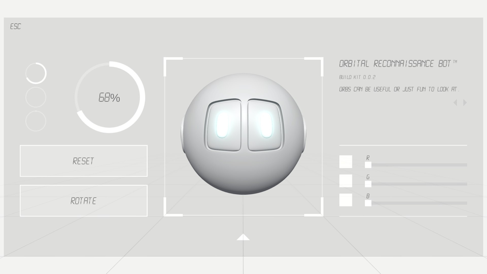
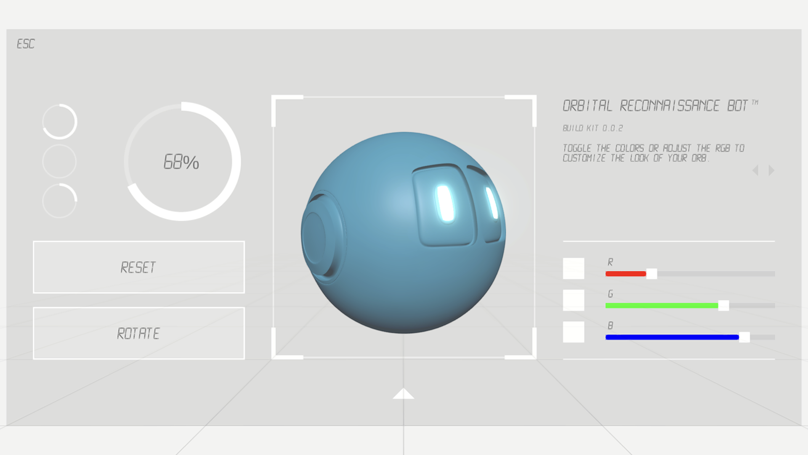
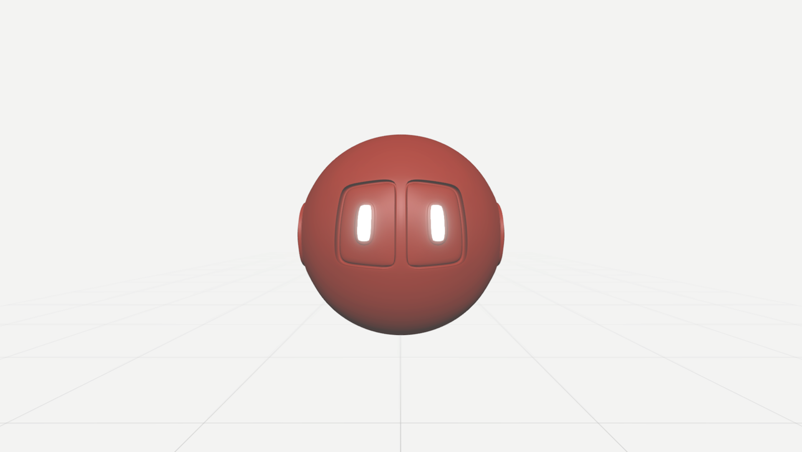

WE ARE OF EARTH
CYBERSPACE ORB FIRST LOOK

Click below to meet your new companion.



This is a first look at our design and tech demo, developed and created for you to experience ORB.
ORB (Orbital Reconnaissance Bot) is our proprietary assistant, a friendly level one AI designed to serve as a companion in your adventures and quests through Cyberspace.
* From Cyberspace Station VR *
Log into the virtual space and evaluate your ORBs, by clicking, dragging, rotating, and laughing.
Customize ORB to your liking.
Engage your ORB's dialogue window to learn about its backstory, creation and early foundation.
A/V: Paul Arthur | Addt'l Creative Direction: Frankie Coletto | WAC: Reynaldo Castilla - 2021
- This preview is optimized for chrome, if you would like a mac/pc download please contact us!
Genre:
Short Story
Platforms:
Google Browser
Send us an email
TOP